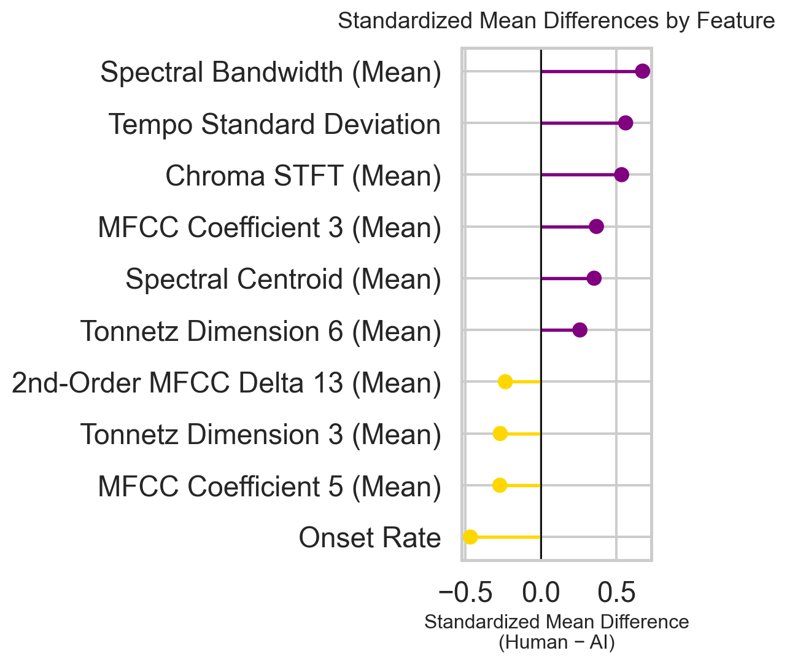
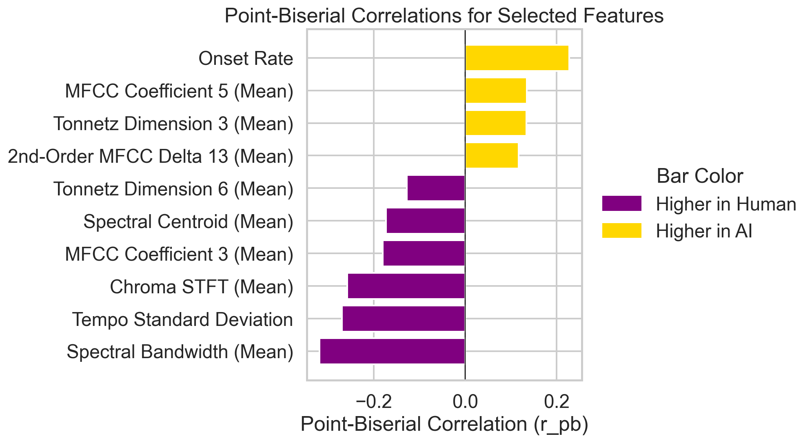
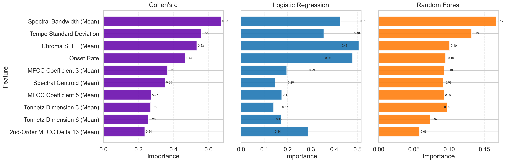
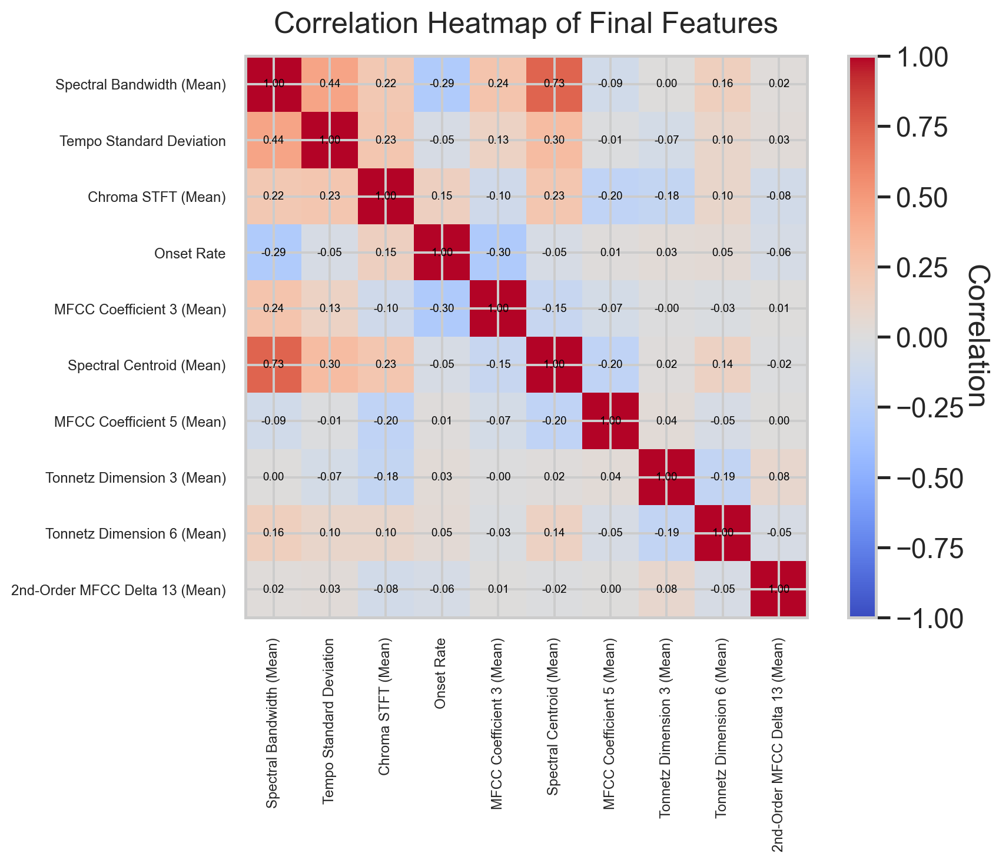
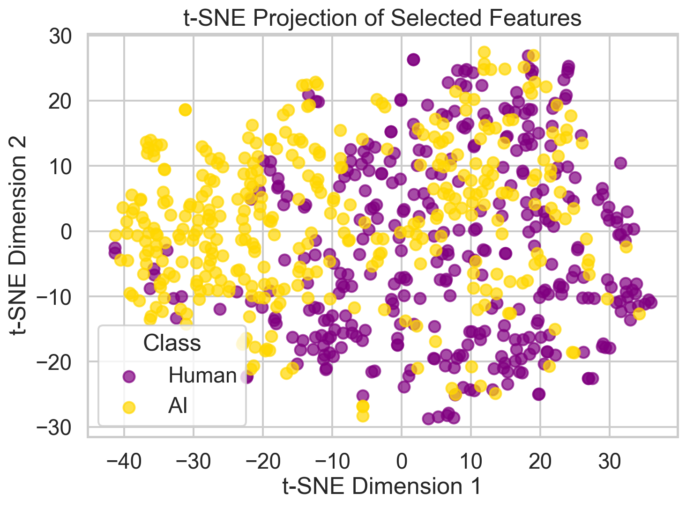

| Feature Name | Definition |
|---|---|
| spectral_bandwidth_mean | How wide the sound is, from low to high; higher values often mean a brighter, more complex tone. |
| tempo_std | How much the speed of the music varies; lower values mean steadier tempo, while higher values reflect more expressive or inconsistent timing. |
| chroma_stft_mean | Measures how often certain musical notes or chords show up; gives a sense of harmonic 'color'. |
| onset_rate | Counts how frequently new notes or sounds begin, like how 'busy' or active the playing is. |
| spectral_centroid_mean | Where most of the sound energy is focused; higher values sound brighter, lower values sound darker. |
| mfcc_3_mean | Captures details of tone and timbre, like a fingerprint of the sound texture. |
| mfcc_5_mean | Another layer of tonal detail; helps distinguish between human and machine playing styles. |
| tonnetz_3_mean | Describes how chords and tones relate; tracks harmonic movement or tension. |
| tonnetz_6_mean | Also captures harmonic relationships, different from tonnetz_3 but similarly focused on musical structure. |
| mfcc_delta2_13_mean | Tracks how the tonal texture changes over time; helps identify expressive or mechanical playing shifts. |
Feature Selection & Statistical Analysis
Used in the final models was a group of ten features. Table 1 provides an overview of these features and their definitions. Table 1 Features used in the final model and their definitions
To identify a concise and informative subset of acoustic features, we employed a rigorous, two-step selection approach that combined statistical hypothesis testing and model-based importance rankings. First, we used several univariate statistical tests, Welch’s t-tests, point-biserial correlations, and one-way ANOVA with post-hoc Tukey HSD, to measure the strength and consistency of differences between human-composed and AI-generated piano excerpts. Welch’s t-test was chosen because it robustly handles unequal variances and unequal sample sizes between groups. While some features deviated from normality under Shapiro–Wilk tests, Welch’s t-test is robust to moderate non-normality, especially with balanced samples. Point-biserial correlations are reported as descriptive effect sizes rather than formal significance tests. Sensitivity checks with nonparametric Mann–Whitney U tests produced qualitatively similar results. The point-biserial correlation, shown in Figure 2, quantified the strength of the linear relationship between each feature and the binary outcome (human or AI). The ANOVA (with Tukey post-hoc tests) confirmed statistically significant differences between group means while adjusting for multiple comparisons. Figure 1 displays the standardized mean differences of the final features that were selected, and whether or not the means are higher in the AI or human-composed classes.

Figure 1. Standardized mean differences (z-score) between human and AI excerpts for the ten selected features. Positive values (purple dots) indicate features whose mean is higher in human-performed clips, while negative values (yellow dots) indicate features higher in AI-generated clips. This visualization highlights the direction and magnitude of each feature’s discriminatory power. Note: see the appendix for more details on hypothesis test outcomes.

Figure 2. Point-biserial correlations between each selected acoustic feature and the binary class label. Bars extending to the right (purple) indicate features with higher average values in AI-generated excerpts, while bars extending to the left (yellow) indicate features with higher average values in human-performed excerpts.
Next, we compared feature rankings from three complementary methods, as shown in Figure 3. On the left, Cohen’s d quantifies each feature’s standardized effect size between human and AI clips, providing a model-agnostic measure of group differences. In the center, the absolute coefficients from an L1-penalized logistic regression pick out features with the strongest linear contributions to classification, enforcing sparsity to highlight only the most robust predictors. On the right, Random Forest Gini importance captures non-linear effects and interactions by measuring how much each feature reduces impurity across the ensemble’s decision trees. Including Cohen’s d alongside these model-based scores ensures we retain features that exhibit large, consistent differences in the raw data, even before any model fitting. Features were prioritized based on how consistently they ranked in the top 10 across multiple methods. However, it was important to keep in mind feature redundancy which we discuss in the next section.
Figure 3 Feature-importance bar charts

Figure 3. Top ten acoustic descriptors selected from the full set of 58 features, ranked by three complementary methods. Left: Cohen’s d effect sizes from Welch’s t-tests; Center: absolute coefficients from an L1-penalized logistic regression; Right: Gini importances from a random forest. These paired comparisons show which features, spectral bandwidth, tempo variability, chroma balance, and others, emerged most consistently as discriminative for distinguishing human versus AI piano excerpts.
Three variables emerged as especially influential in distinguishing AI-generated from human performances. Spectral bandwidth, which reflects the range of frequencies present, tended to be narrower in human recordings, with a richer midrange produced by natural pedaling and touch. In contrast, AI clips often showed unnaturally extended highs and lows resulting from synthesis. Tempo variability captured natural fluctuations in timing, human performers frequently speed up or slow down for expressive effect, whereas AI outputs were more metronomic. Chroma balance, a measure of the evenness of pitch-class use, also differed between the two groups: human players often favored certain tonal centers or voicings, while AI tended toward a more uniform distribution across keys and harmonies. A Chi-square test found no significant association between feature distribution and generation platform (p > 0.05), suggesting that differences are not platform-specific. Assumption Checks: Normality, Variance Homogeneity, and Multicollinearity
Before running parametric statistical tests such as Welch’s t-tests and ANOVA, we checked whether each feature met the assumptions of normality and equal variances between AI and human groups. Shapiro–Wilk tests indicated that all features deviated from normality in at least one group (p < 0.05), so we did not assume normally distributed data. We also ran Levene’s tests for homogeneity of variances, which showed that several key features—such as spectral_bandwidth_mean, tempo_std, and mfcc_3_mean—had significantly different variances between classes. These results reinforced our choice of Welch’s t-test, which is robust to both non-normality and unequal variances, for all hypothesis testing. For the logistic regression model, we examined variance inflation factors (VIF) to assess multicollinearity among the ten final features. All VIF values were below the commonly used threshold of 5, indicating no problematic collinearity. This confirmed that each feature contributed unique information to the model and that coefficient estimates would remain stable and interpretable.
Feature Redundancy Check and Final Selection Criteria To reduce multicollinearity and improve interpretability, we computed pairwise Pearson correlations, Figure 4, among all top-ranked features and enforced a threshold of |r| < 0.7, meaning no two selected features could be too closely correlated. The only exception was spectral_bandwidth_mean and spectral_centroid_mean, which were moderately correlated (r ≈ 0.73) but retained due to their distinct acoustic interpretations: bandwidth reflects spread of energy across frequencies, while centroid captures perceived brightness. Figure 4 Pairwise Pearson correlation heatmap for the ten final acoustic features

Note. Shows all off-diagonal correlations below 0.7 (except the one justified exception), confirming non-redundancy of the selected feature set
This filtering step ensured that our final subset of ten acoustic features was both non-redundant and consistently predictive.
Variance Inflation Factor (VIF) Analysis
To further confirm that our selected features were not excessively collinear, we calculated Variance Inflation Factors (VIF) for each feature in the final set. VIF measures how much the variance of a regression coefficient is inflated due to multicollinearity with other predictors. A VIF of 1 indicates no correlation with other variables, while values above 5–10 are generally considered problematic. As shown in Table 2, all features had VIF values well below the threshold of 5, with most under 2, indicating minimal multicollinearity. This result supports our earlier Pearson correlation check (Figure 4) and provides additional assurance that each feature contributes unique information to the model without introducing instability into the coefficient estimates.
| Feature | VIF |
|---|---|
| spectral_bandwidth_mean | 3.682000 |
| tempo_std | 1.291000 |
| chroma_stft_mean | 1.237000 |
| onset_rate | 1.261000 |
| mfcc_3_mean | 1.525000 |
| spectral_centroid_mean | 3.118000 |
| mfcc_5_mean | 1.128000 |
| tonnetz_3_mean | 1.088000 |
| tonnetz_6_mean | 1.081000 |
| mfcc_delta2_13_mean | 1.020000 |
Exploratory Visualization with Selected Features
To gain intuition about the separability of human-performed versus AI-generated piano excerpts in our selected feature space, we projected the ten features into two dimensions using t-distributed Stochastic Neighbor Embedding (t-SNE). As shown in Figure 4, each point represents a 30-second clip, colored yellow for humans and purple for AI.

Figure 4. Two-dimensional t-SNE embedding of the ten selected acoustic features, with human-performed excerpts shown as yellow circles and AI-generated excerpts shown as purple circles. Pockets of yellow and purple illustrate regions where the acoustic signatures of human timing and timbre versus AI steadiness and spectral breadth tend to cluster.
While the two classes are not perfectly separated, reflecting overlap in certain acoustic traits, there are clear regions where human excerpts cluster, often marked by more expressive timing variations and narrower spectral spreads. AI-generated clips, in contrast, frequently group together in areas characterized by steadier tempi and broader spectral energy. Notably, outlier analysis revealed that most extreme cases in the AI class came from the Suno platform, which tended to produce pieces with unusually high spectral bandwidth and onset rates. These characteristics explain much of the tight clustering for Suno-generated excerpts, while other AI platforms showed more dispersion. Occasional overlaps between classes appear to stem from individual pieces whose acoustic profiles happen to align, rather than random noise, reinforcing the need for a supervised model to capture subtle but consistent distinctions across platforms.